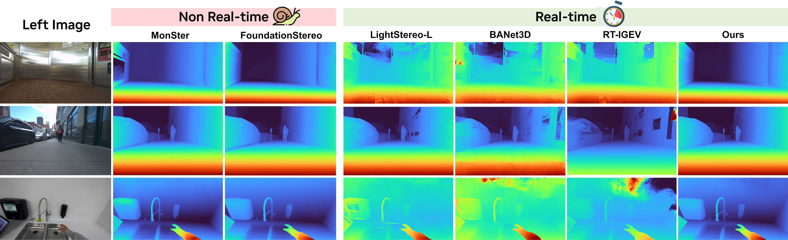
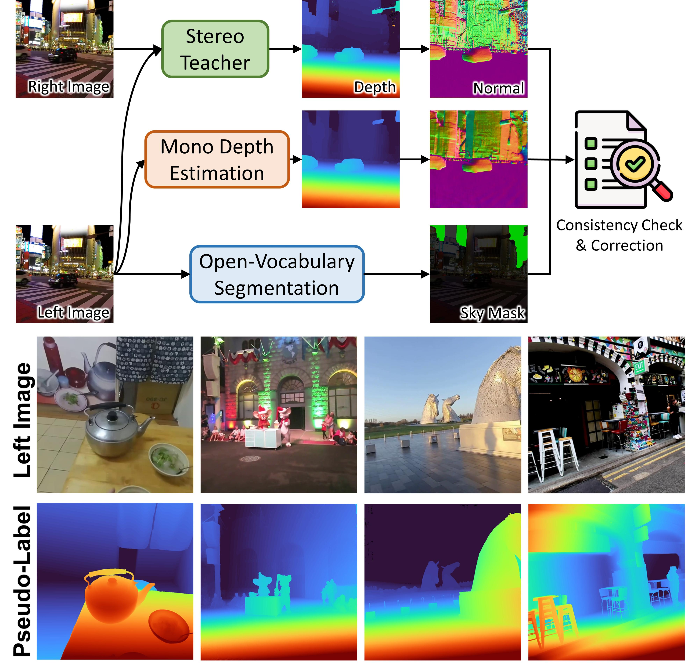
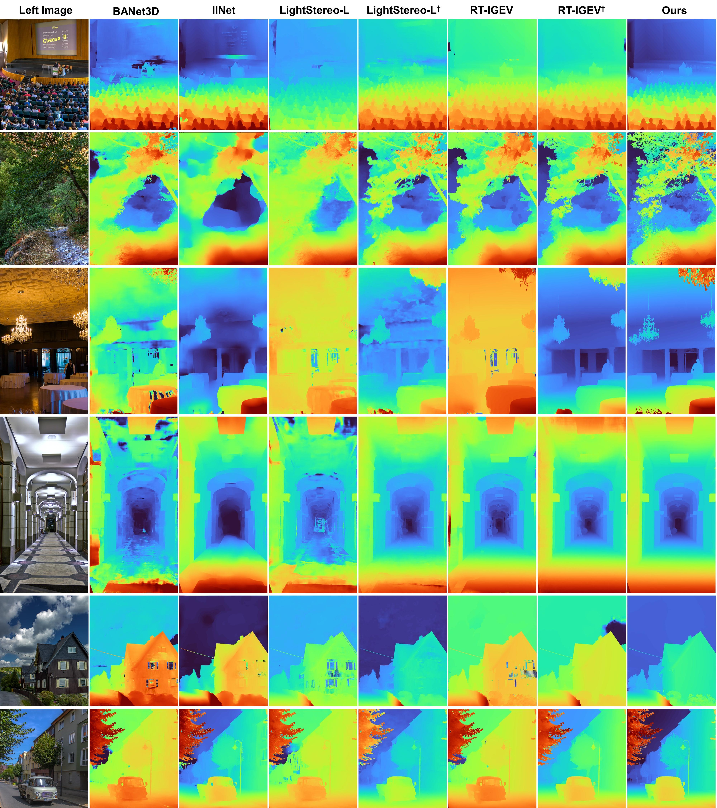
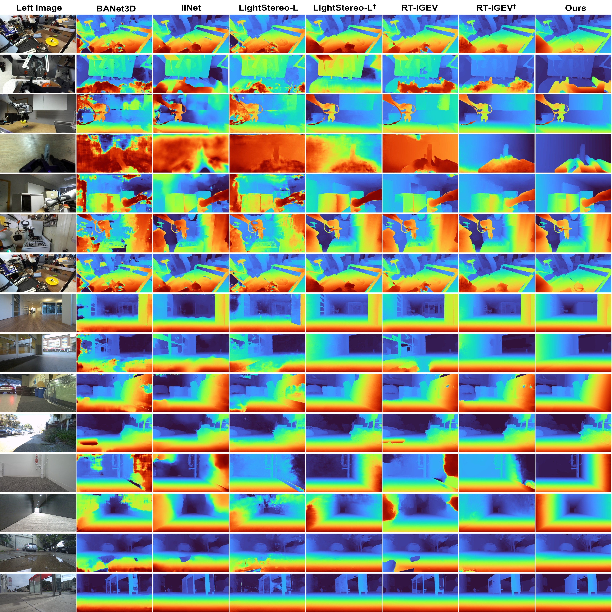

Stereo foundation models achieve strong zero-shot generalization but remain computationally prohibitive for real-time applications. Efficient stereo architectures, on the other hand, sacrifice robustness for speed and require costly per-domain fine-tuning. To bridge this gap, we present Fast-FoundationStereo, a family of architectures that achieve, for the first time, strong zero-shot generalization at real-time frame rate. We employ a divide-and-conquer acceleration strategy with three components: (1) knowledge distillation to compress the hybrid backbone into a single efficient student; (2) blockwise neural architecture search for automatically discovering optimal cost filtering designs under latency budgets, reducing search complexity exponentially; and (3) structured pruning for eliminating redundancy in the iterative refinement module. Furthermore, we introduce an automatic pseudo-labeling pipeline used to curate 1.4M in-the-wild stereo pairs to supplement synthetic training data and facilitate knowledge distillation. The resulting model can run over 10× faster than FoundationStereo while closely matching its zero-shot accuracy, thus establishing a new state-of-the-art among real-time methods.


Top: Foundational stereo matching networks (e.g., FoundationStereo) consist of three key steps: feature extraction, cost filtering, and disparity refinement. Each step is accelerated by a divide-and-conquer strategy. Middle-Left: Hybrid monocular and stereo priors from the teacher foundation model are distilled into a single backbone student model. Middle-right: Refinement network is pruned by first constructing a dependency graph that models the recurrent nature of the GRU module, followed by structured pruning and retraining to recover the accuracy. Bottom: Cost filtering network is divided into separate local blocks; block candidates are trained to match the teacher block's output, taking as input the local feature from the previous block; and combinatorial search finds the best performing block combination for a given runtime constraint.

Real-world data offers greater diversity and realism than synthetic data. However, obtaining real stereo images with ground-truth metric depth annotation is notoriously difficult. To address this challenge, we propose an automatic data curation pipeline to generate pseudo-labels on internet-scale stereo images from Stereo4D dataset. Top: Pseudo-labeling pipeline on in-the-wild internet stereo data. Bottom: Visualization of our generated pseudo-labels.

Below are visualizations of the intermediate results in our pseudo-labeling process. In the rightmost column, green checkmark or red cross denotes whether samples are kept for training or not, based on the percentage of positive pixels in the consistency mask. Our data curation process can automatically discover failures on noisy internet data such as images containing subtitle (bottom), mosaic (2nd last row) and overly challenging samples that are unsuitable for training (top). The final pseudo-labels can also correct erroneous predictions from FoundationStereo on sky regions (5th row).


Below are more zero-shot comparisons among real-time methods. † Denotes training on the exact same datasets as ours (including our proposed pseudo-labels). Our pseudo-labeled internet data consistently enhances the generalization across different methods. However, our model demonstrates strongest robustness, validating the effectiveness of both our model design and pseudo-labeling.


@article{wen2026fastfoundationstereo,
title={{Fast-FoundationStereo}: Real-Time Zero-Shot Stereo Matching},
author={Bowen Wen and Shaurya Dewan and Stan Birchfield},
journal={CVPR},
year={2026}
}